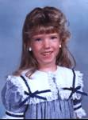
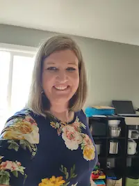

About Me


My name is Tiffany Voorhees. I am a mother to 4 crazy boys that I love dearly! I started playing the piano when I was 7 years old, and it is truly something I have always loved doing. As a junior in high school, I began teaching piano lessons, and continued until I went to Brigham Young University - Idaho (BYU-I). Since BYU-I, I have served a mission in the Washington DC South mission, gotten married, and started my family. My youngest boy is now in all day school, so I have returned to school studying software development, and have started teaching piano lessons once again. I look forward to helping you or your child develop a love for music!